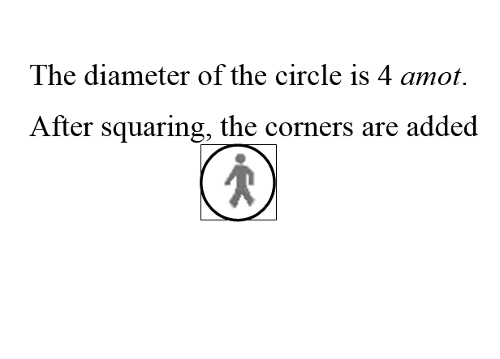
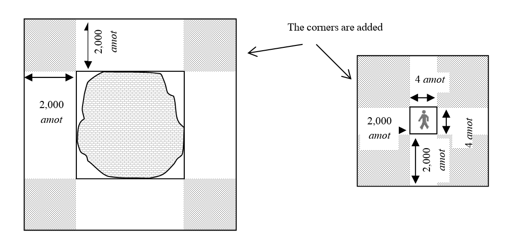
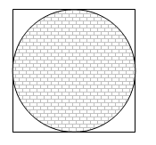
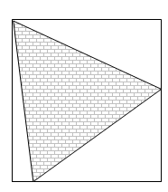
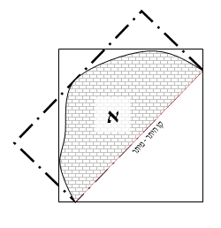
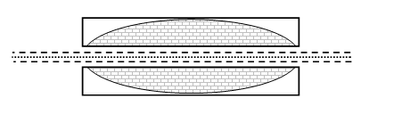
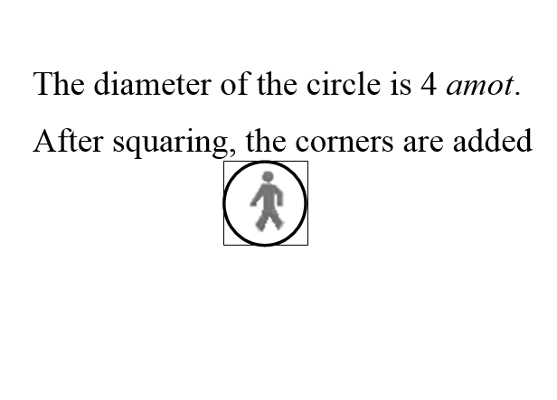
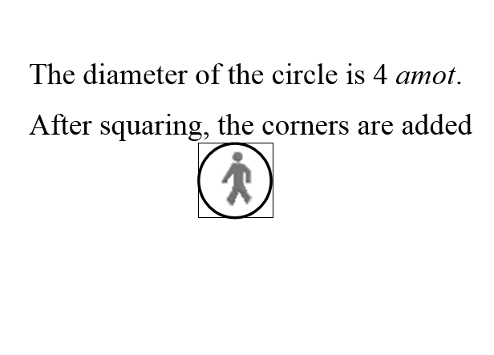
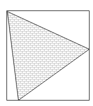
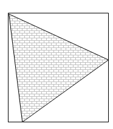

The need to travel from place to place stems from man’s deficiency: he
cannot find his livelihood and meet his needs by remaining stationary. So
he must roam and leave his place. But the idea of Shabbat is for every Jew
to rest from his travails and worries, contemplate the inner perfection of
creation, thank God for choosing Israel from all peoples and giving us His
Torah, and delight in God and His goodness.
For this reason, the Sages ordained boundaries (teĥumin) within
which one may walk on Shabbat, and beyond which one may not walk. One’steĥum Shabbat (Shabbat boundary) is determined by his mekom shevita - the place where he is spending Shabbat (literally
"stopping place") - plus 2,000 amot in each direction (2,000 amot corresponds to 2,000 steps of an average person,
approximately 912 m).
If one is spending Shabbat in a field (i.e., not in a city or town), his mekom shevita is defined as four amot squared. This is
the amount of space one occupies when lying on the ground with his arms and
legs outstretched.
He may walk 2,000 amot beyond that in each direction. If he is
spending Shabbat in a city or town, the entire settled area is considered
one place, and he may travel 2,000 amot beyond the city limits
(see section 8 below).
According to Rambam and Smag, teĥum Shabbat restrictions
are based on Torah law, though the Torah prohibition forbids one to travel
more than twelve mil (24,000 amot, which is 10944 m,
almost eleven km) from his mekom shevita. This is based on the
size of the Israelite camp in the wilderness, as the Torah states: "Let
everyone remain where he is; let no man leave his place on the seventh day"
(Shemot 16:29). However, according to Ramban, Rosh, Rashba, and most
Rishonim, this verse does not refer to the laws of teĥum but
rather to those of carrying in a reshut ha-rabim; all boundary
restrictions (even beyond twelve mil) are rabbinic law.
The Sages ordained that if one must travel beyond the teĥum on
Shabbat - in order to attend a wedding celebration or a Torah lecture - he
may make an eruv teĥumin, which extends his teĥum in the
necessary direction (as explained below in sections 12-14). One who leaves
his teĥum forfeits it and must remain within his four amot (as explained below, section 11).
2. Squaring the Teĥum
The Sages established that one’s mekom shevita on Shabbat is
square, and thus his teĥum is square as well. This means that if
he is spending Shabbat in a field, and his mekom shevita is thus
four amot, the measurement is not made by drawing a circle around
him with a diameter of four amot. Rather, to determine hismekom shevita we inscribe such a circle in a square with four- ama sides along the four cardinal directions, which adds space to
his mekom shevita at the corners. Similarly, if one’s mekom shevita is in a city or town, even if the area is round, we
inscribe it in a square or rectangle, adding space at the corners ( m.Eruvin 53a).

Then 2,000 amot are measured in each direction. Once again we draw
a square or rectangle, which once again grants him additional space in the
corners.

This rule, that we square off the city, is derived from the Torah’s
description of the area the Levites were given outside each of their
cities:
You shall measure off two thousand amot outside the city wall all
around. You shall measure off two thousand amot outside the town
on the east side (lit. corner; same applies to the other directions), two
thousand on the south side, two thousand on the west side, and two thousand
on the north side, with the city in the center. (Bamidbar 35:5)
The most straightforward explanation for why we square the teĥum
is that it is extremely difficult to measure and mark off a circular
boundary. One would need to measure 2,000 amot from almost each
and every point of the city’s perimeter. In contrast, when marking off a
square boundary, only four measurements need to be made - one in each of
the four cardinal directions. After that, a straight line can be drawn in
each direction, and the result is the teĥum.
Additionally, this method reflects a spiritual reality. A circle represents
the infinite, which has no beginning and no end. A person’s life is
circular and cyclical. His actions, wishes, and thoughts repeat themselves
cyclically. Even his limbs are circular and cylindrical. This makes it
difficult for a person to realize his aspirations. The way to solve the
problem is to take one’s "circular" infinite ideas, and give them a
"square" finite framework that will help him put them into practice. This
is the meaning of teĥum Shabbat, which is meant to provide a
framework for absorbing the holiness and blessing of Shabbat. This is why
each city belonging to the Levites, who are charged with revealing faith in
this world, is surrounded by a square boundary.
3. Teĥum Shabbat Is Individual
Teĥum Shabbat
is specific to every individual, based on his location. For example, let us
say that the homes of two neighbors (who do not live in a city) are located
1,000 amot apart from each other. Each neighbor has his ownteĥum Shabbat, part of which overlaps with his neighbor’s teĥum Shabbat, and part of which does not.
The laws of teĥumin apply to one’s animals and belongings, and to
Jews as well as non-Jews (see n, 12 below). Therefore, if one carried his talit to the edge of his teĥum, and his friend wants to
borrow it but has a different teĥum, the friend may not carry thetalit beyond its owner’s teĥum (SA 397:3). If thetalit is jointly owned, it may be carried only where their teĥumin overlap (ibid., 397:9).
4. Spending Shabbat In or Outside a City
For someone who is spending Shabbat in a city or town, whether its
residents are Jewish or non-Jewish, the whole area that is built up
contiguously is considered one place, and the 2,000 amot of the teĥum are measured from its perimeter. Even if there is space
between the homes, as long as they are surrounded by a fence or an eruv, the entire enclosed area is considered one place, and the
2,000 amot are measured from its perimeter (as will be explained
in section 8).
All this pertains to one who spends Shabbat in the city or within its
squared-off area. However, one who spends Shabbat in a field near the city
is limited to 2,000 amot in each direction, and if his 2,000 amot terminate inside a city, his teĥum ends right there,
in the middle of the city. We do not consider the whole city his four amot.
5. Measuring Teĥum in Rabbinic Times and Nowadays
The Sages established rules for measuring the teĥum Shabbat as
precisely as possible. First, they declared: "Teĥum Shabbat may be
measured only with a rope that is fifty amot long, no more or
less" (Eruvin 57b). If a longer rope were used, its weight would
make it hard to pull taut, and the resulting measurement would be too
short. If a shorter rope were used, one might pull it too tight, and the
resulting measurement would be too long. Second, they required those
measuring to hold the rope at chest height. If the person holding one end
of the rope were to hold it at head level, while the person at the other
end were to hold it at foot level, the resulting measurement would be too
short (SA 399:1-3). Third, they said that when measuring an area that
contains a valley, one person should stand on either side of the valley, so
that they can measure the distance in the air. When measuring an area that
contains a hill, tall poles should be set up so that the rope stretches
above the hill. If the valley or hill is more than fifty amot
wide, thus making it impossible to use a fifty-ama rope, the area
should be measured with a four-ama rope. The person standing above
should hold the rope at foot level, and the person standing below should
hold it at chest level. If the slope is so steep that it would be difficult
to calculate the measurement this way, the measurement should be estimated.
If the area contains a cliff, as long as the cliff is less than four amot wide, it is not taken into account at all (Eruvin
58a-b; SA 399:4-5).
The Sages added that for these measurements, we rely only on an expert who
knows how to calculate distances properly. If two experts arrive at
different measurements, we follow the measurement that results in a larger teĥum. Since the laws of teĥum are rabbinic, we follow
the more lenient opinion (Eruvin 58b-59a; SA 399:7-9). If one
happens to spend Shabbat in a place where teĥum Shabbat has not
been calculated, and he needs to go somewhere for the sake of a mitzva, he
may take 2,000 medium-sized strides, which is approximately 2,000 amot (Eruvin 42a; SA 397:2; MB ad loc. 5).
Today it is best to establish teĥum Shabbat using aerial maps or
GPS devices, as these can measure distances with extreme precision. We
should not insist on measuring in the way that the Sages established. After
all, their whole purpose was to measure as precisely as possible, using the
tools available to them, without terribly inconveniencing those charged
with measuring. Now that we have methods of measuring that are both more
precise and more convenient, we must take advantage of them.
6. The Cardinal Directions and Squaring a City
As we have seen (section 2), we square a person’s mekom shevita to
determine his teĥum. If he is in a field (i.e., not in a city or
town), his mekom shevita is a square with four-ama sides;
if he is in a city, we inscribe the city in a square. From this square we
measure 2,000 amot in each direction.
Let us add now that when we square the city, we do so based on the four
cardinal directions (SA 398:3).
If the city already has corners that lend themselves to squaring in a way
that does not follow the four cardinal directions, the squaring is done
accordingly (SA 398:1).
Examples of squaring based on the four cardinal directions:


Examples in which it is agreed that the squaring does not follow the four
cardinal directions:
When a city’s shape lends itself to squaring that does not correspond to
the four cardinal directions, the poskim disagree how to square
it. Some maintain that only when there is a compelling reason not to follow
the four cardinal directions may one follow the layout of the city (SAH
398:3; Ĥayei Adam 76:14). However, most poskim maintain
that if the shape of a city clearly lends itself to squaring in a certain
way, we follow this squaring even though it does not correspond to the four
cardinal directions (see n. 7). In cases of doubt, the local rabbinate or
rabbinic authority should make the decision.
Examples of such intermediate cases in which a city’s shape clearly lends
itself to squaring in a direction other than the four cardinal directions
include cases where one side of the city is straight from one end of the
city to the other (figure 1) and cases where the perimeter of the city
contains a right angle (figure 2, in which case we follow the directions of
the right angle and not the four cardinal directions).

It is important to note that if one is spending Shabbat outside a city and
his mekom shevita is limited to four amot square, he may
choose to square his mekom shevita in whatever direction he
wishes, and this will also determine how his 2,000-amateĥum is squared (see section 12 below).
7. Cases In Which We Do Not Square a City
As we have seen, by squaring the city, we add space in the corners to the teĥum. However, the Sages pointed out that sometimes we cannot
draw straight lines to square the whole city, because the resulting square
would include uninhabited areas that are too large to be considered
subsumed by the city. Examples of this would be cities that are shaped like
a bow or like an L. The operative principle is that if there are 4,000 amot between the two ends of the shape, that part of the city
cannot be squared.
An L-shaped city:
A bow-shaped city:
8. Connecting Settled Areas
As long as the houses in a city are contiguous, meaning that they are not
farther away from one another than the size of a karpif (a large
courtyard, approximately 32 m long), they are considered part of one area
for the purpose of assessing the teĥum. If they are separated from
one another by more space than that, they are not considered part of one
area, and each house’s teĥum Shabbat is then calculated
separately.
If the houses in a city are contiguous, then even if one house is out of
alignment, as long as it is not more than 32 m from the next house, the teĥum’ssquare or rectangle expands to include the
unaligned house. If there are additional houses after this one, the teĥum expands to include them as well; this can continue even if
it means that the teĥum extends outside the city proper for a
distance that would take days to walk. As long as each house is not
separated from the next by more than 32 m, the teĥum extends to
include them. However, if a house is more than 32 m away, it is not
included within the rectangle.
If the distance between two adjacent neighborhoods is greater than the size
of two large courtyards (i.e., over 64 m), then each neighborhood is
considered a town in its own right. We square each on its own, and then
2,000 amot are measured in each direction from that square. In
contrast, if the distance separating the two neighborhoods is 64 m or less,
they are considered one area and we square them together. There must be at
least fifty residents living in an area for a group of houses to be defined
as a neighborhood (Eruvin 60a). Even if there are fewer than fifty
people, as long as the area contains three courtyards, each of which joins
two homes together, or six homes, each of which has a courtyard, the area
is still considered a neighborhood (MB 398:38; Ĥazon Ish OĤ
110:19).
If an area is enclosed by a wall or an eruv, all its homes and
neighborhoods are considered one area. This is true even when the wall or eruv is farther than a karpif’s length from the last
house, and even if there is a large distance between the homes and
neighborhoods.
9. Overlapping Squares
When the squares or rectangles formed around two cities overlap, even when
there is no joint eruv, the overlapping area connects the cities.
We draw a new rectangle around the entire area to include both cities. The
residents of both cities may then walk 2,000 amot beyond the joint
rectangle.
However, if the distance separating the corners of the two rectangles is
greater than 4,000 amot, as we have seen (section 7), we do not
square the entire area. Rather, each city is assigned a standard teĥum of 2,000 amot beyond its rectangle in each
direction.
10. The Status of Large Cities
If a highway within a city is more than 64 m wide and bisects the entire
city, then the city is viewed as divided in two, and the teĥum Shabbat for residents of each of the two sections is
calculated separately. This is also the case for a wide-open area such as a
park or large garden.

If it is more than 64 m wide and bisects the entire
city, then the city is viewed as divided in two, and the teĥum Shabbat for each of the two sections is calculated
separately.
At first glance, it would seem that the Ayalon Highway divides Tel Aviv
into two cities. Nevertheless, since there is an eruv that
encompasses all of Tel Aviv and the nearby cities, the eruv unites
the different sections. Additionally, if a highway bisects a city but the
rectangles drawn around each section overlap, then the overlapping area
joins together the sections and we draw a new rectangle around the entire
area, as explained above. Additionally, one could argue that since it is intended that all a city’s residents will make use
of a highway, park, or large garden, they are considered part of the city
and do not actually divide it.
Others disagree, maintaining that these factors - an eruv, usage
by all city residents, and overlapping rectangles - cannot join together
the two sections formed by a highway or park that bisects a city. The
primary position is the lenient one. However, it is proper to be stringent
and avoid walking more than twelve mil beyond the highway, since
some say that traveling beyond twelve mil is forbidden by Torah
law (see section 1 above).
11. Traveling Beyond the Teĥum and Items Arriving from Beyond the Teĥum
One who traveled beyond the boundaries of the teĥum, whether
knowingly or unknowingly, forfeits his 2,000 amot and may now only
move within his four amot (SA 405:1; n. 1 above). Should he need
to move his bowels, he may walk to a place where he will be able do so
privately. Afterward, he may distance himself from this place enough to
avoid the foul smell, so that he may recite prayers and berakhot,
but he may not move more than four amot from that spot (SA 406:1).
One who traveled beyond the teĥum knowingly and reached an area
enclosed by a wall or eruv is nonetheless limited to his four amot. Even if he is now inside a house, he may not move more than
four amot. In contrast, if he traveled beyond the teĥum
unknowingly or under duress, he may walk freely within the enclosed area
(SA 405:6; BHL s.v. "aval").
If one traveled beyond the teĥum in order to save a life, the
Sages ordained that upon completing his mission, he may walk 2,000 amot in each direction. If this new teĥum overlaps his
original teĥum, he may return home, and he retains his original teĥum as though he never left (Eruvin 44b). In certain
cases he may even return to his original place regardless of teĥumin, as explained above in 27:10 and n. 12).
If one is traveling on a plane that, due to unforeseen circumstances, lands
in an airport on Shabbat, his teĥumShabbat is
established upon his landing, and he may not go farther than 2,000 amot in any direction.
Since an airport is generally surrounded by a fence and often contains an
area for sleeping, the whole airport is considered his four amot,
and he can walk another 2,000 amot beyond it. However, if the
airport is not surrounded by a fence, then his mekom shevita is
established the moment the plane touches down. If the plane then taxies on
the runway for another 2,000 amot, he has gone beyond his teĥum, and he may not move any farther than his four amot
. This means he must remain on the plane until Shabbat ends. If the crew or
security personnel insist that he leave, or if he needs to leave in order
to use the bathroom, he may do so. If he then reaches an enclosed area, he
may move around within it, since the only reason he originally traveled
beyond his teĥum is that he was forced to do so (SA 405:6). If his
flight was for the sake of a mitzva, then even if the plane taxies for a
full kilometer and the airport is not fenced in, he may still walk 2,000 amot from the airplane door (SA 248:4; MB ad loc. 32).
One whose boat docked on Shabbat may leave the boat and walk 2,000 amot in each direction. This is because until reaching the port,
the boat was more than ten tefaĥim above the ocean floor, so teĥum Shabbat did not apply to it. Only once he sets foot on dry
land is his teĥum established. If the port is fenced in, he may
walk 2,000 amot beyond the enclosure (SA 404:1; n. 3 above).
One who traveled beyond his teĥum and then returned inside his teĥum unknowingly or due to circumstances beyond his control may
still walk within his teĥum (SA 406:1). However, if he traveled
beyond the teĥum knowingly, then even if he returned unknowingly,
he forfeits his teĥum, though he may still walk throughout the
city (SA 405:8).
Just as one may not travel beyond his teĥum on Shabbat, he also
may not move his possessions outside the teĥum. If he took fruit
beyond the teĥum unknowingly, even though they may not be carried
more than four amot, they may be eaten. If he did so knowingly,
the fruit may not be eaten (SA 405:9; MB ad loc. 52; see above,
ch. 26 n. 6).
If a non-Jew brought fruit from outside the teĥum on Shabbat, as
long as he brought them for himself or for another non-Jew, a Jew may eat
the fruit. However, one may not carry them more than four amot. If
the non-Jew brought the fruit into a home or a site that is enclosed by a
fence or an eruv, one may carry the fruit within the enclosed
area. In contrast, if the non-Jew brought the fruit for a Jew, that Jew and
the members of his household may not eat the fruit until enough time has
passed after Shabbat for the fruit to have been brought then (SA 325:8).
12. Eruv Teĥumin
If one wants to walk on Shabbat to a place that lies beyond histeĥum, he can render it permissible by making aneruv teĥumin before Shabbat, that is, by establishing his mekom shevita at the place where he puts the eruv. By
placing this eruv,he merges the old teĥum
(which would not have allowed him to go where he wants) with the new teĥum (which will allow him to go there) - this is why it is
called an eruv (which literally means "merging") teĥumin.
However, the distance that the eruv teĥumin affords him in one
direction is lost in the opposite direction. For example, if one places the eruvteĥumin 2,000 amot to the east of his home,
he may now walk 4,000 amot eastward (2,000 amot from his
home to the eruv and 2,000 amot beyond the eruv
), but he may no longer walk westward at all.
There are two ways to shift one’s mekom shevita. The first is by
simply walking 2,000 amot in the desired direction before Shabbat
begins and staying there for the onset of Shabbat. As long as one is there
during the entire period of bein ha-shmashot, that becomes his
place, and his teĥum Shabbat is now calculated from that point. He
does not need to verbalize anything for this to take effect. It is enough
for him to intend to establish his teĥum from that point. In
contrast, if one is hiking in a field during bein ha-shmashot but
does not intend to establish his mekom shevita there, his mekom shevita remains his home (SA 409:7; MB ad loc. 29).
The second way is to set aside two meals’ worth of food at that place and
recite the declaration for making an eruv teĥumin,along
with a berakha, as will be explained in the next section. An eruvteĥumin should be made only for the purpose of a
mitzva - for example in order to attend a Torah lecture or a mitzva
celebration. If one makes an eruv teĥumin for some other purpose,
it is still effective be-di’avad (SA 415:1).
When making an eruv teĥumin, one must place it within 2,000amot of his home. This way his home will be within the teĥum of the eruv, and he may then walk from his home to
the eruv. If his home is outside the eruv’s teĥum, the eruv is ineffective, and his teĥum
is measured from his home.
One can actually use an eruv teĥumin to travel 5,600 amot
,not just 4,000 amot. Since the mekom shevita
where he sets aside the eruv is temporary (unlike a city, as above
in section 6), he may have in mind for the new teĥum created by
the eruv to be oriented so that the square’s diagonal faces his
desired direction. He thus gains the additional corners.
13. Placing the Eruv Teĥumin and Reciting the Berakha
One who wishes to make an eruv by placing food must set aside two
meals’ worth of food. If bread is used, it must amount to the volume of six
eggs, which is approximately 300 ml. (Others maintain that it must amount
to the volume of eight eggs.) If one wishes to use food that is eaten
together with bread, it is sufficient to use the amount of that food that
would normally be spread on or eaten together with six eggs’ volume of
bread (SA 409:7). If the eruv is meant to serve several people,
two meals’ worth of food must be left for each person. If a large number of
people are involved and one would like to minimize the bulkiness of the eruv, he may use olive oil, chocolate spread, or peanut butter, as
relatively small quantities of these foods are used with a large amount of
bread. One may also use a revi’it (75 ml) of vinegar, which is
enough to use as a dip or dressing for two meals’ worth of vegetables (MB
386:35; 409:36). Drinks may also be used for the eruv as long as
there are two revi’iyot (150 ml) per person (SA 386:6). Salt and
water may not be used for the eruv (Eruvin 26a).
The food must belong to the person who plans to make use of the eruv, as he uses this food to establish his mekom shevita
. When the eruv is meant for several people, the food’s owner must
arrange for each person to acquire some of the food, making all of them
partners in it. This is accomplished by means of third person, who lifts up
the food with the intent to acquire it on behalf of all those who need to
use the eruv (SA 413:1).
If the food set aside for the eruv was eaten beforebein ha-shmashot, the eruv is ineffective. However, after bein ha-shmashot the eruv may be eaten, because once one
has established his mekom shevita during bein ha-shmashot
, it remains in effect for all of Shabbat (Rema 394:2). If theeruv was left in a place where it could not be accessed during bein ha-shmashot without transgressing a Torah law (for example,
if a boulder would need to be rolled away to retrieve it), the eruv is ineffective (SA 394:3; 409:3-4).
When setting aside the eruv, one should recite the following berakha: "Blessed are You, Lord our God, King of the universe, Who
sanctified us with His mitzvot and commanded us regarding the
mitzva of eruv" (" asher kideshanu be-mitzvotav ve-tzivanu al mitzvat eruv"). One
should follow this with the declaration: "With this eruv it shall
be permitted to me to walk 2,000 amot from this place in every
direction." Bedi’avad, even if he simply said: "This shall be an eruv," it is effective. But if he said nothing at all, he has not
established an eruv (SA 415:4; MB ad loc. 15).
When the eruv is meant to serve several people, their names should
be explicitly mentioned as part of the declaration. One must also take care
that the eruv contains two meals’ worth of food for each person
who needs to rely on it (SA 415:4). If he would like the eruv to
be effective for multiple Shabbatot, he should add at the end of
the declaration the phrase "for all Shabbatot of the year." Then,
as long as the eruv remains in existence, it is effective (MB ad loc. 16).
An eruv may be placed by a shali’aĥ (emissary or proxy).
However, a minor, a non-Jew, or one who does not believe in the mitzva of eruv cannot serve as a shali’aĥ. The shali’aĥ
must recite the berakha and the declaration. If he said nothing,
the eruv is not effective (SA 409:8). However, it is effective if
the owner of the eruv declares: "With the eruv that myshali’aĥ is setting aside, I will be permitted to walk 2,000 amot from the eruv in every direction" (BHL s.v.
"ve-yomar").
One cannot place an eruv on behalf of another without the other
person’s knowledge. One may place an eruv for his minor children,
and the teĥum that it establishes is binding for them. Similarly,
one may place an eruv for members of his household who are over
the age of bar or bat mitzva. However, if upon hearing
that there is an eruvteĥumin they object and state that
they do not want it, the teĥum that it establishes is not binding
for them. A child who is under the age of six is considered secondary to
his mother, so an eruv that is effective for the mother is
effective for her child as well (SA 414:1-2).
14. Establishing a Conditional Eruv for All Local Residents
One may place an eruv conditionally. For example, if one knows
that on Shabbat two Torah scholars will be lecturing in two nearby towns,
but he has yet to decide if he will attend the lecture to the east, the one
to the west, or neither, he places one eruv in the east and one in
the west and stipulates in his mind that on Shabbat he will decide which teĥum to use, the one based on his home, on the eruv in
the west, or on the eruv in the east. Once he has made his
decision, though, he is bound by his chosen teĥum. If he did not
make a conscious decision but merely started walking in accordance with
only one specific teĥum, he has thus established his teĥum and may no longer change his mind and walk in accordance
with a different teĥum (Eruvin 82a; SA 413:1; MB ad loc. 8).
One may volunteer to place an eruv on behalf of all residents of a
locale. He then declares: "With this eruv it shall be permitted
for all local residents and their guests to walk 2,000 amot from
this place in every direction." Anyone who is aware of the existence of
this eruv before Shabbat, even if he did not decide that the site
of the eruv is his mekom shevita, may decide on Shabbat
that he wishes to walk in that direction and may rely on the communal eruv. However, one who was unaware of the eruv’s
existence before Shabbat may not rely on it (SA 413:1).
If there are so many local residents that the person placing the eruv cannot leave two meals’ worth of food for each one of them,
then as long as he knows that there will be no more than twenty people who
will want to rely on the eruv, he may place two meals’ worth of
food for twenty people and declare: "With this eruv it shall be
permissible for anyone who wishes to walk 2,000 amot from this
place in every direction for all Shabbatot of the year." This
allows all who are interested in relying upon his eruv to do so,
on condition that they are aware of its existence before the Shabbat they
rely on it (SA 413:1; BHL s.v. "le-khol eĥad"). It seems that when it is
clear that someone will make use of the eruv, the berakha
should be recited, but when it is uncertain whether anyone will make use of
it, no berakha should be recited.
If one places an eruv unconditionally, his teĥum is
determined by the location of the eruv. He may not change his mind
and follow the teĥum measured from his home.
***
May we all be privileged to accept
Shabbatot
joyously, to observe them properly, to become sanctified on them by
remembering our faith, to spend them studying Torah, and to enjoy them
through food and slumber. May our soul be illuminated by a twofold light,
and may its light suffuse our entire week. May blessing extend to all of
our works from the realm of Shabbat -
teĥum Shabbat
- and may we merit complete redemption, speedily in our day.
[1]
According to R. Ĥayim Naeh’s calculations, which are based on
Rambam (with whom the vast majority of poskim agree), one ama is 48 cm, and 2,000 amot is 960 m. According
to Ĥazon Ish, one ama is 57.6 cm, and 2,000 amot
is 1152 m. Since it has been ascertained that the Turkish dirhem
with which R. Naeh was familiar is larger than the dirhem used in
Rambam’s time, we should follow the more accurate calculation even
though it results in a stringency. (Additionally, theshi’urim of volume need to be in sync with the shi’urim of distance, since the Sages said that the volume
of forty se’ah can fit into an area of one ama by
one ama by three amot.) Therefore, R. Ĥayim Beinish writes in Midot Ve-shi’urei Torah 5:24
that according to Rambam, one ama is 45.6 cm and 2,000 amot is 912 m. In addition, the actual length of the
average man’s forearm (ama)is approximately 45
cm. See Peninei Halakha:Berakhot, ch. 10 n. 11.
This is how we present every halakhic measurement. See above, ch.
29 n. 1.
[2]
According to SA 396:1, one’s "place" is four amot by fouramot, as it is with regard to carrying in a reshut ha-rabim or a karmelit. Rema writes that
some maintain for the purposes of teĥumin, one’s place
extends four amot from the center in each direction, for a
total of eight amot by eight amot.
[3]
The Sages were uncertain whether boundary restrictions apply above
ten tefaĥim; perhaps, since people do not walk there, the
prohibition does not apply there. In practice, when there is
uncertainty pertaining to a rabbinic prohibition, the law follows
the more lenient position. Therefore, regarding boat travel in
oceans and rivers, where Rambam agrees that the prohibition is not
a Torah prohibition (as such travel is not comparable to travel in
the wilderness), as long as one is ten tefaĥim above the
seabed, the teĥum prohibitions do not apply (Eruvin 43a; SA 404:1). According to SA 248:2, the ten tefaĥim above the seabed are measured from the bottom of
the boat, while according to R. Eliezer of Metz they are measured
from one’s feet. SAH and MB248:14 state that in times of
need one may be lenient. However, if one is traveling at a height
of more than ten tefaĥim above land, several poskim maintain that one should be stringent in accordance
with Rambam and not travel more than twelve mil (Rema 404:1).
[4]
When measuring 2,000 amot from a city or town, according
to Rambam and SA 398:5, we measure from the outermost homes or from
the eruv (following the opinion of the Sages in Eruvin 57a). According to Rosh and Rema, one first adds
the equivalent area of a karpif (an enclosed courtyard in
front of the houses) to the city, which amounts to 70 2/3 amot (approximately 32 meters). This area is now
considered part of the city. From there we measure 2,000amot (following the opinion of R. Meir in the above gemara; see MB 398:21 and BHL s.v. "ve-khen"). As
explained in section 8 below, when there are two settled areas
adjacent to each other, SA agrees to the karpif rule.
[5]
If a town is so small that the entire area is within his 2,000 amot, then the area of the town is skipped (the whole city
is considered four amot), and his 2,000 amot
continue from the far edge of the town (SA 408:1). Here is an
example:
[6]
The city’s residents may not decide to square the city in a way
that does not follow the four cardinal directions just because they
would like to add space in the corners in the direction they wish
to go. This is because the law is unequivocal: the city must be
squared in accordance with the four cardinal directions. This is
based upon the procedure described for the Levite cities: "You
shall measure off two thousand amot outside the city wall
all around. You shall measure off two thousand amot
outside the city on the east side, two thousand on the south side,
two thousand on the west side, and two thousand on the north side,
with the city in the center" (Bamidbar 35:5). We see that the verse
follows the four cardinal directions. This understanding is implied
in MT 28:7 and SA398:3, and is also followed by MB 398:7 and Ĥazon Ish 110:23. Some maintain that
the city’s residents do have the right to decide to square their
city in a way that does not correspond with the four cardinal
directions. In such a case, every individual is bound by the
group’s decision (Rabbeinu Yehonatan, Eruvin 16a, s.v.
"im"; Perisha 398:1; Mirkevet Ha-Mishneh, Shabbat
27:2; Noda Bi-Yehuda, Mahadura Tinyana, OĤ 51).
[7]
In the city featured in figure 1, most Rishonim and Aĥaronim rule
that it is squared based on the right angle (as is the case with a
city that is shaped like an L, according to Rashba, Ran, Ritva, and
Me’iri). In the city featured in figure 2, one side of the entire
city is a straight line. The law in such a case can be derived from
the case of a city that is shaped like a bow (section 7), where it
is squared based on this straight line, or "bowstring" (Me’iri, Eruvin 55a). Ĥazon Ish states this as well in OĤ 80 and
110. Some maintain that in both the above cases, the city must be
squared based on the four cardinal directions (SAH 388:3; Ĥayei Adam 76:14). Others maintain that in all doubtful
cases, the city is squared in whichever way will add the least area
to the city (Ĥazon Ish 110:23). The halakha
follows the first opinion, that of the majority of poskim,
and the figures above reflect this opinion. Nevertheless, when it
is not clear if the perimeter of a city contains a right angle, the
local rabbinate or rabbinic authority may decide to rely on those
who rule that such a city should be squared based on the four
cardinal directions.
[8]
Rambam and SA 388:4 state, in disagreement with this diagram, that
the 2,000 amot are measured from the edges of the
inhabited homes. The resulting teĥum follows the curve of
the bow. However, the diagram follows the opinion of Tosafot (55b, s.v. "ve-im lav"), Rosh, most Rishonim, and
Rema that for the inside of the bow, where the arc narrows to less
than 4,000 amot, we draw a "bowstring" from one end of the
arc to the other and measure the teĥum as 2,000amot from that straight line (see diagram). The halakha follows the majority of poskim,
especially since the laws of teĥumin are rabbinic, so thehalakha follows the lenient position. AlthoughTur has an even more lenient opinion, the rest of the poskim disagree, as detailed in BHLs.v. "ve-yesh
omrim." Uncertainty still remains regarding how to measure the teĥum for the rest of the bow, where the arc widens to
4,000 amot and greater. It would seem that we can follow
the position of Rambam and SA that the teĥum follows the
curve, as displayed in the diagram. Ĥazon Ish maintains this as
well (OĤ 110:10). See Harĥavot.
[9]
The shi’ur of a karpif is 70 amot and
four tefaĥim. Following the updated calculation described
in n. 1, this is 32.224 m, and the size of two large courtyards is
64.448 m. For the sake of simplification, we use the rounded-off
measurements of 32 m and 64 m.
[10]
As mentioned above, two cities or neighborhoods do not join
together if they are separated by 64 m, which is double the size of
a city’s outskirts (SA 398:7). Rema adds that if the entire length
of a city is bisected with at least this much space, then the city
is viewed as divided in two. Similarly, if a park that is more than
64 m wide stretches the entire length of a city, it divides the
city, and each part is considered its own city. R. Ephraim Ariel
Buchwald in his book Kiryat Ariel presents a ruling of R.
Yosef Shalom Elyashiv that the Ayalon Highway, Namir Highway (north
of the Yarkon River), and the Yarkon itself - each of which is over
64 m wide - divide Tel Aviv into five cities.
Nevertheless, for several reasons it seems that these highways and
the river do not divide the city. First of all, the Tel Aviv eruv encloses all these parts, joining them together into
one city. When the halakha speaks of a bisected city being
divided in two, it is referring to a situation in which the walls
have been breached. If the city is walled, however, it is still
considered one area. Furthermore, even if the eruv happens
to be down and in practice one may not carry in the area, as long
as the majority of the eruv is still standing, the city
may still be considered one area. Orĥot Shabbat states
this in ch. 28 n. 163 in the name of R. Shmuel Auerbach, who
derives it from the laws of sacrifices (certain types of which had
to be eaten within the walls of Jerusalem), for which a wall whose
breaches cover less length than its standing parts is effective ( Tosafot, BM53b).
If the road bisecting a city is not straight, the rectangles drawn
around each section can overlap, thus uniting the city even if
there is no eruv. This opinion was expressed by R. Shalom
Noaĥ Segal Weiss in Tikun Eruvin 2:5:39 (p. 211) and n.
156 (pp. 236-237). MaĥazehAvraham OĤ 70 states
that even if the rectangles do not touch each other, as long as the
distance between them is less than 64 m, they are considered
joined.
Another justification for leniency is that the shi’ur of
64 m - double the size of a city’s outskirts - was based on the
standards in talmudic times. However, now that cities are much more
sprawling, the entire area that serves the city’s residents should
be considered part of the city’s outskirts. This can be derived
from the law of a city that is situated next to a stream. If the
bank of the stream that is closer to the city has a balcony that is
four amot wide, the entire stream is considered part of
the city, and the city’s teĥum is measured from the
farther bank. This would seem to be the case even when the width of
the stream is greater than 64 m. MB398:46 cites Ritva ( Eruvin 61a, s.v. "ve-Ra"Ĥ z"l") that since "this stream is
in front of the whole city and is fit to be used by all the city’s
residents, we can consider it an extension of the city even though
it is not habitable." We may also add the possibility raised by MA
(398:13) that from the status of the stream we can extrapolate to
any place that the city residents use. If so, urban highways are a
part of the city even if they are very wide, since their purpose is
to be used by the city’s residents. This would also be the case
with public parks and gardens. R. Michael Bleicher writes along
these lines in Teĥum Shabbat U-medidato, p. 24.
(Nevertheless, we see from Rema, cited at the beginning of this
note, that the definition of a city is based on physical criteria,
not on whether the two sections share a municipality.)
In practice, since the law is rabbinic, we may be lenient, whether
based on the rationale that the city has an eruv, or on
the rationale that the rectangles drawn around each section
overlap. Each rationale is sufficient on its own, and they are even
stronger when considered together. Even when distances greater than
twelve mil are involved, where some Rishonim maintain that
a Torah prohibition applies, we may be lenient based on these
rationales. However, if there is no great need, it is proper to
defer to the stringent opinion.
[11]
See n. 3 above, which discusses the Sages’ uncertainty about
whether the prohibitions of teĥumin apply to airspace more
than ten tefaĥim above land. The plane in this case has
flown more than twelve mil on Shabbat; therefore,
according to Rambam and those who follow his position, who maintain
that traveling beyond twelve mil on Shabbat is prohibited
by Torah law, one who lands on Shabbat should be stringent and stay
within his four amot. However, according to most poskim, traveling beyond one’s teĥum is never
prohibited by Torah law, so we may be lenient cases of uncertainty.
Therefore, we do not have to worry about teĥumin above ten tefaĥim. The passenger’s teĥum is established
only once his plane lands, after which he has 2,000 amot
in each direction, as I wrote in the main text. In any case, even
according to Rambam, since the passenger’s arrival on Shabbat was
unintentional, he may walk through the entire airport as long as it
is enclosed by a fence (see Rema 248:4; MB ad loc. 32; Yaskil Avdi 8:20:62; Yalkut Yosef 248:4).
[12]
Two sets of laws apply to objects that arrive from outside theteĥum. The first is the standard laws ofteĥum Shabbat. Objects carried outside of theirteĥum are considered the same as people who left their teĥum unknowingly or due to circumstances out of their
control, since objects have no will of their own. Therefore, if the
objects arrived in an enclosed area, they may be carried throughout
the enclosed area. However, if they were brought to a place that is
not enclosed, they may be moved only four amot. If they
are returned to their original place, they revert to their original
status.
The second set of laws relates to benefiting from prohibited
actions done on Shabbat, and the intent of the person transporting
the fruits determines their status. If he did so knowingly, no one
may benefit from his actions, and the fruit may not be eaten. If he
brought them unknowingly, then since the prohibition itself is
rabbinic, they may be eaten (Pri Megadim; BHL 318:1, s.v.
"ha-mevashel"; see Harĥavot 26:4:1). If a non-Jew brought
the fruit from outside the teĥum for himself or for
another non-Jew, a Jew may eat them; but if he brought them for a
Jew, that Jew and his household may not eat the fruit until enough
time has elapsed for the fruit to have been brought to them
permissibly after Shabbat.
The Sages established that the laws of teĥumin also apply
to objects belonging to non-Jews, and such objects acquire a mekom shevita wherever they are when Shabbat began. If it
was permitted to carry objects belonging to non-Jews without limit,
people might mistakenly come to believe that objects belonging to
Jews are also not subject to the laws of teĥumShabbat. Ownerless items, however, are not subject to teĥumin restrictions (SA 401:1).
[13]
The Sages allow a traveler who wishes to establish his mekom shevita someplace further along the way to do so by
merely verbalizing this wish. This special leniency is effective as
long as two conditions are met. First, it must be possible for him
to reach that location before dark if he hurries. Second, at the
moment when Shabbat begins, he must be within 2,000 amot
of the location (SA 409:11). However, if he intends to establish
his mekom shevita somewhere beyond his 2,000 amot
, he loses his teĥum Shabbat, and he may not move beyond
his four amot, since he cannot establish the desired
location as his mekom shevita, as he is beyond itsteĥum, and he cannot establish his current location as his mekom shevita either, since he pushed it out of his mind.
This is the opinion of Rashba, Rosh (Eruvin 4:13), and Tur (409:11). However, according to Rambam, whenever one
fails to establish his mekom shevita at his desired
location, he establishes it at his current location
instead. SA cites Rambam as a secondary opinion (" yesh omrim").
If one is traveling and wishes to establish his place verbally, he
must specify the four amot that he intends as his mekom shevita. An example of such a verbalization might be
"The four amot surrounding such-and-such tree trunk." If
he did not delineate the area precisely, according to most Rishonim
the entire uncertain area is included in his mekom shevita
. If he said, "My place for Shabbat is under that tree," but half
the tree is outside his 2,000 amot, he has not established
a mekom shevita, and he is left with only his four amot. As mentioned in the previous paragraph, according to
Rambam, whenever one does not specify his mekom shevita
adequately, rendering his desired teĥum ineffective, his
current location becomes his mekom shevita instead, and
his teĥum is 2,000 amot from there. Under
pressing circumstances, one may rely on this opinion.
[14]
At first glance, it would seem that in most large cities, setting
aside an eruvteĥumin is ineffective. After all,
we saw in section 4 that when one is outside the city at the start
of Shabbat, we do not include the whole city in his four amot. He may travel within the city only as far as his
2,000 amot allow. If so, when one’s home is more than
2,000 amot from the eruv that one makes, the eruv is ineffective, and his status is the same as that of
any other resident of the city. Indeed, this is howBeit Me’ir, Maĥatzit Ha-shekel, andOlat Shabbat understand SA 408:1, and so statesEliya Rabba 408:8 as well. According to MAand MB 408:3, 7, 10, SA agrees that one’s mekom shevita
in such a case is indeed the location where he set aside the eruv. Since he was in his home when Shabbat began, he may
walk within the city in the direction of the eruv, but
once he has left the city, he may not return home. According to
Rema, since this person’s home is in the city, if he placed an eruv outside the city, he has a connection to both places;
therefore, in addition to the 2,000 amot granted him by
his eruv, the whole city is considered four amot
and he may walk freely within it. Even after he leaves the city, he
may return to it and walk within it. BHL’s discussion of this
matter concludes with an endorsement of MA’s understanding of SA
(408:1, s.v. "raĥok"). However, many rule in accordance with Rema,
including Baĥ, Noda Bi-Yehuda ( Mahadura Tinyana 49), and AHS. SHT ad loc. 11
states that one should not object to those who are lenient in
accordance with Rema. Since the laws of teĥum Shabbat are
completely rabbinic, when necessary one may rely on Rema.
[15]
Eruvin
26a states that one may use a saltwater mixture for aneruv, and Rambam writes this as well (MT, Laws of Eruvin 1:8). However, based on the continuation of the
Gemara, Tosafotad loc. s.v. "aval" state that
this is limited to a case in which oil is mixed in with the
saltwater. SA 386:5 presents Rambam’s opinion, and then citesTosafot as a secondary opinion. MB ad loc. 29 states that the halakha follows the lenient
first opinion.
[16]
The Tanna’im disagree about this law. According to the Sages and R.
Yehuda in the Mishna (Eruvin 36b), a stipulation is
effective when placing an eruv, based on the principle of
retroactive clarification ("yesh breira"). In this case,
it means that when one decides which eruv he wants to use,
it clarifies retroactively which of the two potentialeruvin he set aside before Shabbat was the true eruv. The beraita mentions that some maintain
that retroactive clarification is ineffective (Eruvin 36b
and 37b). The Talmud in Beitza 38a cites the opinion of R.
Oshaya that for Torah laws retroactive clarification is
ineffective, while for rabbinic laws it is effective. This is the
opinion of most poskim, including Rambam, Rabbeinu Tam,
Rosh, Ramban, Ran, and SA YD 331:11. SA413:1 and MB ad loc. 7 conclude similarly. Therefore, one may set
aside multiple eruvin and then decide on Shabbat which eruv he will use to establish his teĥum. (Some
disagree: Ri maintains that retroactive clarification is effective
even for Torah laws, while Maharam of Rothenburg as quoted in Mordechai maintains that it is ineffective even for
rabbinic laws.)
SA 413:1 uses the expression, "It all depends on his stipulation."
This implies that if one places an eruv conditionally,
such as by saying: "If the Torah scholar comes to the east, my eruv will be in the east," and then the Torah scholar
comes to the east, the person’s teĥum is set and cannot be
changed.
 

 The laws of teĥumin apply to one’s animals and belongings, and to
Jews as well as non-Jews (see n, 12 below). Therefore, if one carried his talit to the edge of his teĥum, and his friend wants to
borrow it but has a different teĥum, the friend may not carry thetalit beyond its owner’s teĥum (SA 397:3). If thetalit is jointly owned, it may be carried only where their teĥumin overlap (ibid., 397:9).
The laws of teĥumin apply to one’s animals and belongings, and to
Jews as well as non-Jews (see n, 12 below). Therefore, if one carried his talit to the edge of his teĥum, and his friend wants to
borrow it but has a different teĥum, the friend may not carry thetalit beyond its owner’s teĥum (SA 397:3). If thetalit is jointly owned, it may be carried only where their teĥumin overlap (ibid., 397:9).


 



 If an area is enclosed by a wall or an eruv, all its homes and
neighborhoods are considered one area. This is true even when the wall or eruv is farther than a karpif’s length from the last
house, and even if there is a large distance between the homes and
neighborhoods.
If an area is enclosed by a wall or an eruv, all its homes and
neighborhoods are considered one area. This is true even when the wall or eruv is farther than a karpif’s length from the last
house, and even if there is a large distance between the homes and
neighborhoods.